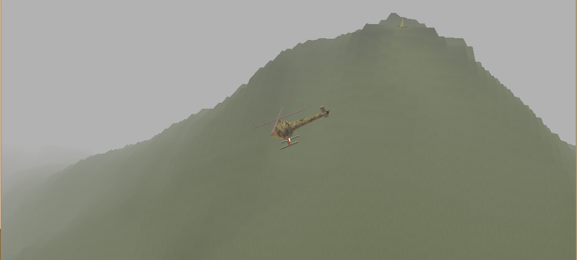
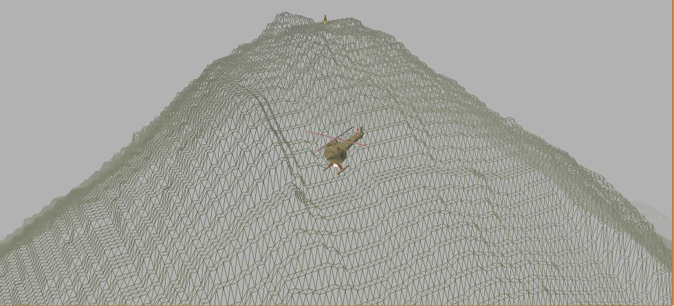

Projects
Helicoptering (Tech Demo)
Overview
Helicoptering was an OpenGl tech demo I created during my second year at university. This was programmed in Java, using OpenGl as middleware.
This demo was very basic but gave me good experience with working in a 3D space, rendering shapes, vector math, and physics behaviour.
The helicopter could be controlled using the keyboard.
Features:
Middleware
The middleware implemented. Click each to see website(Opens in new tab).
Screenshots


References
Jogamp.org. (2016). JOGL - Java Binding for the OpenGL API. [online]
Available at: http://jogamp.org/jogl/www/ [Accessed 23 Oct. 2016].
Code Snippet
/**
* @author Sean Chambers
* Base helicopter class assembles the helicopter drawing and animates.
*/
public class Helicopter {
GLUT glut = new GLUT();
GLU glu = new GLU();
//Translate
public double tx=0;
public double ty=0;
public double tz=0;
//Get ground level at helicopter's x,z location
public Ground ground;
public double groundLevel =0;
//Directionals
public boolean wKey;
public boolean sKey;
public boolean aKey;
public boolean dKey;
public boolean upKey;
public boolean downKey;
public boolean rightKey;
public boolean leftKey;
public boolean toggleSpotLight = true;
//Speeds
public double forward;
public double strafe;
public double altitude;
//Constants
//WASD Inputs
public static final double MAX_WASD_SPEED =10;
public static final double WASD_SPEED = 5;
//Rotation
public static final double ROTATION_SPEED = 50;
public static final double MAX_ROTATION_SPEED = 100;
//Pitch and Roll
public static final double ROLL_PITCH_SPEED = 12.5;
public static final double MAX_ROLL_PITCH = 25;
//Altitude
public static final double MAX_ALTITUDE_SPEED = 10;
public static final double ALTITUDE_SPEED = 5;
//Rotor speeds
public static final double ROTOR_SPEED = 500;
public static final double MAX_ROTOR_SPEED = 2000;
public static final double LIFT_OFF_SPEED = 1500;
//Booleans on rotors
public boolean power;
//Rotors
public double rotateDeg;
public double rotatingSpeed;
//pitch and roll
public double pitch;
public double roll;
//create objects
//Rotors
public Rotor rotors = new Rotor();
//spotlight
public Spotlight spotlight;
//Textures
public Texture bodyTexture;
//Materials
float ambient[] = {0.2f, 0.2f, 0.2f, 1};
float diffuse[] = { 1, 0, 0, 1};
float specular[] = { 1, 1, 1, 1};
float shininess = 100;
public Helicopter(GL gl, Ground ground){
try {
bodyTexture = TextureIO.newTexture(
new File("./textures/helicopter_body3.jpg"), true);
} catch ( IOException e ) {
}
spotlight = new Spotlight(gl);
gl.glMaterialfv(GL.GL_FRONT, GL.GL_AMBIENT, ambient, 0);
gl.glMaterialfv(GL.GL_FRONT, GL.GL_DIFFUSE, diffuse, 0);
gl.glMaterialfv(GL.GL_FRONT, GL.GL_SPECULAR, specular, 0);
gl.glMaterialf(GL.GL_FRONT, GL.GL_SHININESS, shininess);
this.ground = ground;
}
public void animate(double delta){
//Ground level = the y coordinate of the ground/heightmap*scale + 0.8 (My helicopter's legs.)
groundLevel = ground.heightMap[(int) (tx+ground.heightMap.length/2)][(int) (tz+ground.heightMap.length/2)]*100 -50+0.8;
//Main rotor speeds + altitude movement.
//Increase rotor speed to 2000 then stop increasing.
if(power == true)
if(rotors.speed < MAX_ROTOR_SPEED)
rotors.speed += ROTOR_SPEED*delta;
//Altitude can be moved once rotors are up to speed.
if(rotors.speed > LIFT_OFF_SPEED){
if(upKey && altitude < MAX_ALTITUDE_SPEED)
altitude += ALTITUDE_SPEED*delta;
else if(!upKey && altitude > 0)
altitude -= ALTITUDE_SPEED*delta;
if(downKey && altitude > -1*MAX_ALTITUDE_SPEED)
altitude -= ALTITUDE_SPEED*delta;
else if(!downKey && altitude < 0)
altitude += ALTITUDE_SPEED*delta;
ty += altitude*delta;
}
//Rotors power down once at ground level
if(power == false && rotors.speed > 0)
rotors.speed -= ROTOR_SPEED*delta;
//Resets helicopter to ground level if it goes below.
if(ty < groundLevel)
ty = groundLevel;
//Animate Rotors
rotors.animate(delta);
//Check if helicopter is off the ground every frame.
if(ty > groundLevel){
//pitch helicopter
if(sKey && pitch < MAX_ROLL_PITCH)
pitch += ROLL_PITCH_SPEED*delta;
else if(!sKey && pitch > 0)
pitch -= ROLL_PITCH_SPEED*delta;
if(wKey && pitch > -1*MAX_ROLL_PITCH)
pitch -= ROLL_PITCH_SPEED*delta;
else if(!wKey && pitch < 0)
pitch += ROLL_PITCH_SPEED*delta;
//roll
if(aKey && roll < MAX_ROLL_PITCH)
roll += ROLL_PITCH_SPEED*delta;
else if(!aKey && roll > 0)
roll -= ROLL_PITCH_SPEED*delta;
if(dKey && roll > -1*MAX_ROLL_PITCH)
roll -= ROLL_PITCH_SPEED*delta;
else if(!dKey && roll < 0)
roll += ROLL_PITCH_SPEED*delta;
//Rotate around Y axis
if(leftKey && rotatingSpeed < MAX_ROTATION_SPEED)
rotatingSpeed += ROTATION_SPEED*delta;
else if(!leftKey && rotatingSpeed > 0)
rotatingSpeed -= ROTATION_SPEED*delta;
if(rightKey && rotatingSpeed > -1*MAX_ROTATION_SPEED)
rotatingSpeed -= ROTATION_SPEED*delta;
else if(!rightKey && rotatingSpeed < 0)
rotatingSpeed += ROTATION_SPEED*delta;
rotateDeg += rotatingSpeed*delta;
//Move helicopter forwards and backwards in direction it's facing.
if(sKey && forward < MAX_WASD_SPEED)
forward += WASD_SPEED*delta;
if((!sKey && forward > 0) || forward > MAX_WASD_SPEED)
forward -= WASD_SPEED*delta;
if(wKey && forward > -MAX_WASD_SPEED)
forward -= WASD_SPEED*delta;
if((!wKey && forward < 0) || forward > MAX_WASD_SPEED)
forward += WASD_SPEED*delta;
//Strafe helicopter reletive to which it faces.
if(dKey && strafe < MAX_WASD_SPEED)
strafe += WASD_SPEED*delta;
if((!dKey && strafe > 0) || strafe > MAX_WASD_SPEED){
strafe -= WASD_SPEED*delta;
}
if(aKey && strafe > -MAX_WASD_SPEED)
strafe -= WASD_SPEED*delta;
if((!aKey && strafe < 0)|| strafe > MAX_WASD_SPEED)
strafe += WASD_SPEED*delta;
tx += forward*(Math.cos(Math.toRadians(rotateDeg-90)))*delta;
tz -= forward*(Math.sin(Math.toRadians(rotateDeg-90)))*delta;
tx -= strafe*(Math.cos(Math.toRadians(rotateDeg-180)))*delta;
tz += strafe*(Math.sin(Math.toRadians(rotateDeg-180)))*delta;
}
else{
//If helicopter hits the ground, then the helicopter is reset.
pitch = 0;
roll = 0;
strafe = 0;
forward = 0;
}
}
public void draw(GL gl){
gl.glEnable(GL.GL_COLOR_MATERIAL);
gl.glTranslated(tx, ty, tz);
//yaw
gl.glRotated(rotateDeg, 0 , 1 , 0);
//pitch
gl.glRotated(pitch, 1 , 0 , 0);
//roll
gl.glRotated(roll, 0 , 0 , 1);
//BODY
gl.glPushMatrix();
Material.RedRubber.draw(gl);
drawBody(gl);
gl.glPopMatrix();
//NOSE
gl.glPushMatrix();
drawNose(gl);
gl.glPopMatrix();
//TAIL
gl.glPushMatrix();
drawTail(gl);
gl.glPopMatrix();
//TAIL FIN
gl.glPushMatrix();
drawTailFin(gl);
gl.glPopMatrix();
//LEGS
gl.glPushMatrix();
drawRightLeg(gl);
gl.glPopMatrix();
gl.glPushMatrix();
drawLeftLeg(gl);
gl.glPopMatrix();
//FEET
gl.glPushMatrix();
drawRightFoot(gl);
gl.glPopMatrix();
gl.glPushMatrix();
drawLeftFoot(gl);
gl.glPopMatrix();
//ROTOR_KNOB
gl.glPushMatrix();
rotorKnob(gl);
gl.glPopMatrix();
//TOP ROTORS
gl.glPushMatrix();
rotors.draw(gl);
gl.glPopMatrix();
//TAIL PLUG
gl.glPushMatrix();
drawTailPlug(gl);
gl.glPopMatrix();
//TAIL ROTOR KNOB
gl.glPushMatrix();
drawTailRotorKnob(gl);
gl.glPopMatrix();
Material.NeutralWhite.draw(gl);
//DRAW SPOTLIGHT
gl.glPushMatrix();
spotlight.draw(gl);
gl.glPopMatrix();
if(toggleSpotLight)
spotlight.enableSpot(gl);
else
spotlight.disableSpot(gl);
}
//BODY
public void drawBody(GL gl){
bodyTexture.enable();
bodyTexture.bind();
GLUquadric body = glu.gluNewQuadric();
glu.gluQuadricTexture(body, true);
glu.gluSphere(body, 0.5,30,10);
glu.gluQuadricTexture(body, false);
bodyTexture.disable();
}
//ROTOR_KNOB
public void rotorKnob(GL gl){
gl.glColor3f(1, 1, 1);
gl.glTranslated(0, .675, 0);
gl.glRotated(90, 1 , 0 , 0);
bodyTexture.enable();
bodyTexture.bind();
GLUquadric body = glu.gluNewQuadric();
glu.gluQuadricTexture(body, true);
glu.gluCylinder(body, 0.05, 0.1, 0.2, 15, 5);
glu.gluQuadricTexture(body, false);
bodyTexture.disable();
}
//LEGS
public void drawRightLeg(GL gl){
gl.glColor3f(.2f, .15f, 0f);
gl.glTranslated(0, -0.4 , 0);
gl.glRotated(90, 0, 1 , 0);
gl.glRotated(45, 1 , 0 , 0);
GLUquadric body = glu.gluNewQuadric();
glu.gluCylinder(body, .05, .05, .5, 25, 5);
}
public void drawLeftLeg(GL gl){
gl.glColor3f(.2f, .15f, 0f);
gl.glTranslated(0, -0.4 , 0);
gl.glRotated(270, 0, 1 , 0);
gl.glRotated(45, 1 , 0 , 0);
GLUquadric body = glu.gluNewQuadric();
glu.gluCylinder(body, .05, .05, .5, 25, 5);
}
//FEET
public void drawRightFoot(GL gl){
gl.glColor3f(1,1,1);
gl.glTranslated(0.35, -0.75, 0);
gl.glScaled(0.075,.075, 1);
bodyTexture.enable();
bodyTexture.bind();
glut.glutSolidCube(1);
bodyTexture.disable();
}
public void drawLeftFoot(GL gl){
gl.glColor3f(1,1,1);
gl.glTranslated(-0.35, -0.75, 0);
gl.glScaled(0.075,.075, 1);
bodyTexture.enable();
bodyTexture.bind();
glut.glutSolidCube(1);
bodyTexture.disable();
}
//NOSE
public void drawNose(GL gl){
gl.glTranslated(0, 0, -0.3);
bodyTexture.enable();
bodyTexture.bind();
GLUquadric body = glu.gluNewQuadric();
glu.gluQuadricTexture(body, true);
glu.gluCylinder(body, 0.4, 0, -.5, 25, 5);
glu.gluQuadricTexture(body, false);
bodyTexture.disable();
}
//TAIL
public void drawTail(GL gl){
gl.glTranslated(0, 0, .4);
bodyTexture.enable();
bodyTexture.bind();
GLUquadric body = glu.gluNewQuadric();
glu.gluQuadricTexture(body, true);
glu.gluCylinder(body, 0.25, 0.1, 2, 15, 5);
glu.gluQuadricTexture(body, false);
bodyTexture.disable();
}
//TAIL FIN
public void drawTailFin(GL gl){
gl.glTranslated(0, 0.1, 2.3);
gl.glScaled(0.1,.6,0.2);
bodyTexture.enable();
bodyTexture.bind();
glut.glutSolidCube(1);
bodyTexture.disable();
}
//TAIL ROTOR KNOB
public void drawTailRotorKnob(GL gl){
gl.glTranslated(0.0, 0, 2.3);
gl.glRotated(90, 0 , 1 , 0);
bodyTexture.enable();
bodyTexture.bind();
GLUquadric body = glu.gluNewQuadric();
glu.gluQuadricTexture(body, true);
glu.gluCylinder(body, 0.08, 0.025, 0.2, 15, 5);
glu.gluQuadricTexture(body, false);
bodyTexture.disable();
}
//TAIL PLUG
public void drawTailPlug(GL gl){
gl.glTranslated(0, 0.0, 2.4);
bodyTexture.enable();
bodyTexture.bind();
GLUquadric body = glu.gluNewQuadric();
glu.gluQuadricTexture(body, true);
glu.gluSphere(body, .1,30,10);
glu.gluQuadricTexture(body, false);
bodyTexture.disable();
}
}